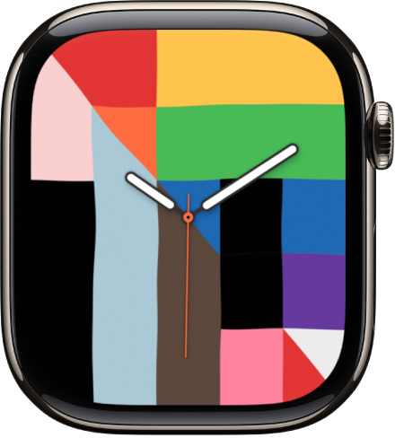

此表盘的灵感来自于彩虹旗。色块汇聚在一起形成数字，代表小时。垂腕时，纯色块会变暗并幻化为彩色线条。
下方的文件数包括本地化资源。固件名称键能确认包的归属；组件的圆屏点击边界、亮屏过渡与 AOD 对照均待设备验证。
原始包 已解析属性表 Mach-O 方法与成员 ARM64 汇编 解出的图集
.strings × 44 .car × 1 .plist × 1 无扩展名 × 1
NTKPride2025FaceBundle.bundlePRIDE2025_DESCRIPTION色组与设备条件 共享色组与默认值
-[_TtC22NTKPride2025FaceBundle17Pride2025FaceView tritium_didTransitionToTritiumOn];-[_TtC22NTKPride2025FaceBundle17Pride2025FaceView tritium_prepareForTransitionToTritiumOnAnimated:withCompletion:];-[_TtC22NTKPride2025FaceBundle17Pride2025FaceView tritium_didTransitionToTritiumOff];-[_TtC22NTKPride2025FaceBundle17Pride2025FaceView tritium_transitionToTritiumOnWithProgress:];-[_TtC22NTKPride2025FaceBundle17Pride2025FaceView tritium_createFaceAnimator];-[_TtC22NTKPride2025FaceBundle17Pride2025FaceView tritium_alwaysOnTimelines];-[_TtC22NTKPride2025FaceBundle17Pride2025FaceView tritium_transitionToFrameSpecifier:];-[_TtC22NTKPride2025FaceBundle17Pride2025FaceView tritium_responseForTapToWakeAtPoint:];-[_TtC22NTKPride2025FaceBundle17Pride2025FaceView tritium_transitionToTritiumOffWithProgress:];-[_TtC22NTKPride2025FaceBundle17Pride2025FaceView tritium_handleAlwaysOnTapToWakeAtPoint:withResponse:withCompletion:];-[_TtC22NTKPride2025FaceBundle17Pride2025FaceView tritium_shouldApplyOverrideDate];-[_TtC22NTKPride2025FaceBundle17Pride2025FaceView tritium_willTransitionToTritiumOnToFrameSpecifier:];-[_TtC22NTKPride2025FaceBundle17Pride2025FaceView tritium_willTransitionToTritiumOffFromFrameSpecifier:];-[_TtC22NTKPride2025FaceBundle18Pride2025HandsView tritium_transitionToTritiumOnWithProgress:];-[_TtC22NTKPride2025FaceBundle18Pride2025HandsView tritium_transitionToTritiumOffWithProgress:];-[_TtC22NTKPride2025FaceBundle17Pride2025FaceView tritium_didTransitionToTritiumOn];-[_TtC22NTKPride2025FaceBundle17Pride2025FaceView tritium_prepareForTransitionToTritiumOnAnimated:withCompletion:];-[_TtC22NTKPride2025FaceBundle17Pride2025FaceView tritium_didTransitionToTritiumOff];-[_TtC22NTKPride2025FaceBundle17Pride2025FaceView tritium_transitionToTritiumOnWithProgress:];-[_TtC22NTKPride2025FaceBundle17Pride2025FaceView tritium_createFaceAnimator];-[_TtC22NTKPride2025FaceBundle17Pride2025FaceView tritium_alwaysOnTimelines];-[_TtC22NTKPride2025FaceBundle17Pride2025FaceView tritium_transitionToFrameSpecifier:];-[_TtC22NTKPride2025FaceBundle17Pride2025FaceView tritium_transitionToTritiumOffWithProgress:];-[_TtC22NTKPride2025FaceBundle17Pride2025FaceView _configureForTransitionFraction:fromEditMode:toEditMode:];-[_TtC22NTKPride2025FaceBundle17Pride2025FaceView setOverrideDate:duration:];-[_TtC22NTKPride2025FaceBundle17Pride2025FaceView tritium_willTransitionToTritiumOnToFrameSpecifier:];-[_TtC22NTKPride2025FaceBundle17Pride2025FaceView tritium_willTransitionToTritiumOffFromFrameSpecifier:];-[_TtC22NTKPride2025FaceBundle18Pride2025HandsView tritium_transitionToTritiumOnWithProgress:];-[_TtC22NTKPride2025FaceBundle18Pride2025HandsView tritium_transitionToTritiumOffWithProgress:];+[_TtC22NTKPride2025FaceBundle13Pride2025Face _complicationSlotDescriptors];+[_TtC22NTKPride2025FaceBundle13Pride2025Face _richComplicationSlotsForDevice:];+[_TtC22NTKPride2025FaceBundle13Pride2025Face _orderedComplicationSlots];-[_TtC22NTKPride2025FaceBundle13Pride2025Face _localizedNameForDynamicSectionCustomEditMode:slot:];-[_TtC22NTKPride2025FaceBundle17Pride2025FaceView layoutSubviews];-[_TtC22NTKPride2025FaceBundle17Pride2025FaceView _configureComplicationView:forSlot:];-[_TtC22NTKPride2025FaceBundle22Pride2025MiniClockView layoutSubviews];-[_TtC22NTKPride2025FaceBundle28Pride2025ComplicationFactory keylineViewForComplicationSlot:];-[_TtC22NTKPride2025FaceBundle28Pride2025ComplicationFactory initForDevice:];-[_TtC22NTKPride2025FaceBundle28Pride2025ComplicationFactory loadLayoutRules];-[_TtC22NTKPride2025FaceBundle28Pride2025ComplicationFactory newLegacyViewForComplication:family:slot:];-[_TtC22NTKPride2025FaceBundle28Pride2025ComplicationFactory configureComplicationView:forSlot:faceView:];-[_TtC22NTKPride2025FaceBundle28Pride2025ComplicationFactory newLegacyViewForComplication:family:slot:faceView:];-[_TtC22NTKPride2025FaceBundle28Pride2025ComplicationFactory configureComplicationView:forSlot:];-[_TtC22NTKPride2025FaceBundle28Pride2025ComplicationFactory loadLayoutRulesForFaceView:];